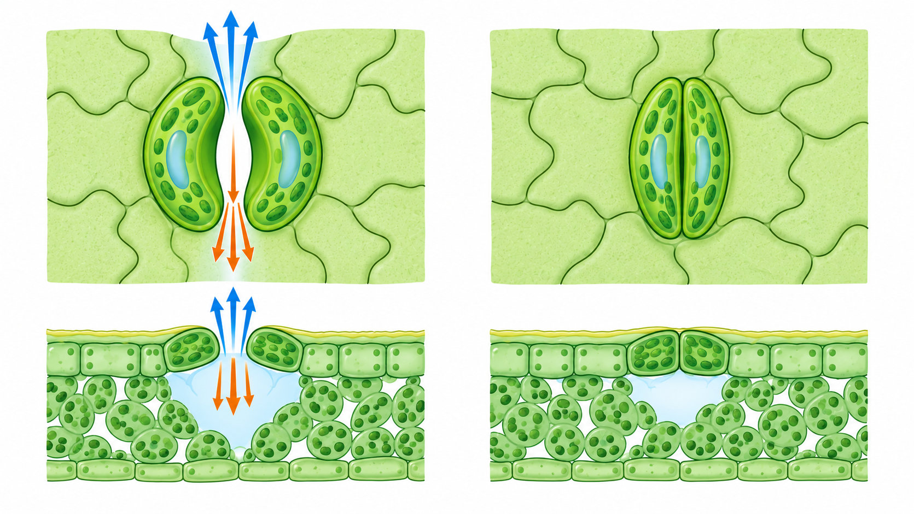
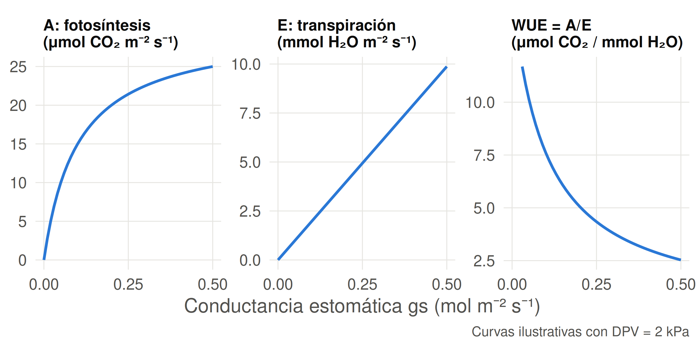
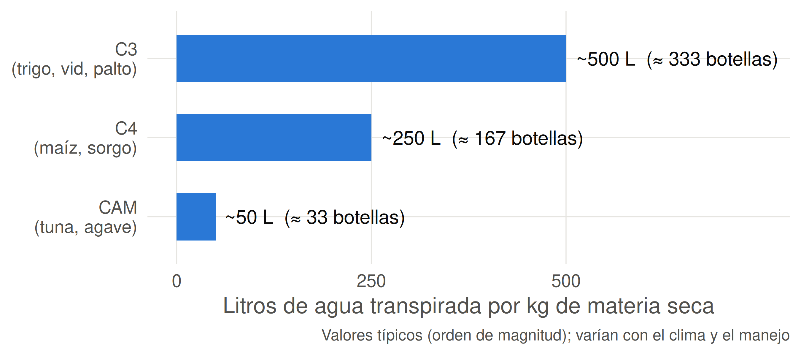
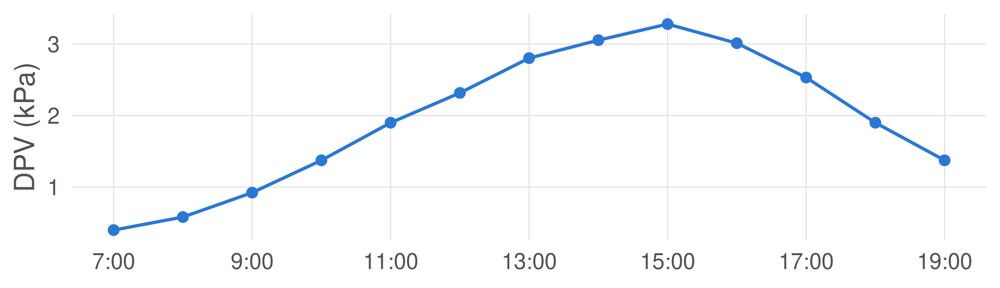
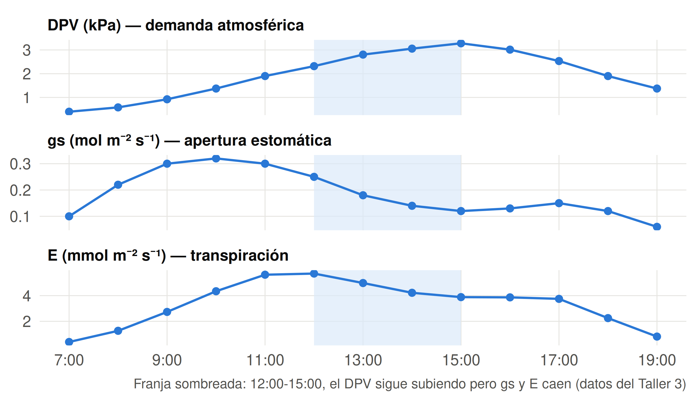

Sesión 3.3: Transpiración, fotosíntesis y control estomático
Piénsalo 30 segundos y anota tu apuesta.
≈ 130 botellas (~200 L de agua) en una temporada
Y de toda esa agua, más del 95% se va al aire como vapor. Solo una fracción mínima queda en la planta.
¿Por qué la planta “derrocha” tanta agua? Esa es la pregunta de hoy.
Sesión 3.2 — Ideas fuerza:
- El agua sube por el xilema tirada por la transpiración
- La teoría de cohesión-tensión explica el ascenso
- El mayor salto de \(\Psi\) está en la interfaz hoja → atmósfera
- Medimos el estado hídrico con Scholander, psicrómetro y porómetro
Ahora: cerramos el SPAC. ¿Cómo sale el agua de la hoja y cómo se regula? Y la pregunta de fondo: ¿cuánta agua “cuesta” producir biomasa?
| Unidad | 3 — El agua en la planta |
| Sesión | 3.3 |
| RAA | RAA5 |
| Duración | ~90 minutos |
| Contenido | Transpiración, conductancia estomática, relación transpiración-fotosíntesis, WUE, factores ambientales |
Al finalizar esta sesión, serás capaz de:
El agua sale de la planta por la hoja, a través de los estomas.
| Estructura | Función |
|---|---|
| Estomas | Poros regulables en la epidermis (hoja, principalmente envés) |
| Células oclusivas | Controlan la apertura/cierre del poro |
| Cámara subestomática | Espacio aéreo saturado de vapor bajo el estoma |
| Cutícula | Capa cerosa que reduce la pérdida de agua (transpiración cuticular ~5-10%) |
Más del 90% del agua que pierde una planta sale por los estomas.
Abierto — células oclusivas turgentes que se curvan y separan
Cerrado — células oclusivas flácidas que se juntan

Arriba: vista superficial de la epidermis · Abajo: corte transversal con la cámara subestomática · Flechas azules: vapor de agua que sale
La transpiración es la pérdida de agua en forma de vapor desde la planta hacia la atmósfera.
El vapor se mueve por difusión: de la cámara subestomática (alta concentración de vapor) hacia el aire exterior (menor concentración).
\[ E = \frac{c_i - c_a}{r_s + r_a} \]
donde:
- \(c_i\) = concentración de vapor dentro de la hoja
- \(c_a\) = concentración de vapor en el aire
- \(r_s\) = resistencia estomática | \(r_a\) = resistencia de la capa límite (aire)
El déficit de presión de vapor (DPV) es la fuerza motriz: a mayor DPV, más se “seca” el aire y más transpira la planta.
La transpiración depende de dos cosas:
La atmósfera demanda; la planta controla con los estomas.
La conductancia estomática (\(g_s\)) es la facilidad con que el vapor pasa por los estomas. Es el inverso de la resistencia:
\[ g_s = \frac{1}{r_s} \]
Unidades: mol H₂O m⁻² s⁻¹ (o mmol m⁻² s⁻¹)
| \(g_s\) | Estado de los estomas | Transpiración |
|---|---|---|
| Alta (0.3-0.5) | Abiertos | Alta |
| Media | Parcialmente cerrados | Media |
| Baja (< 0.05) | Cerrados | Mínima |
La apertura estomática responde a múltiples señales simultáneamente:
| Señal | Efecto en los estomas |
|---|---|
| Luz | Abre (fotosíntesis activa) |
| CO₂ interno bajo | Abre (necesita CO₂) |
| CO₂ interno alto | Cierra |
| DPV alto | Cierra (evita deshidratación) |
| \(\Psi_{hoja}\) bajo (sequía) | Cierra (vía ABA, hormona del estrés) |
La planta optimiza: abre para captar CO₂, cierra para no deshidratarse.
Vota con la mano: ✋ abierto · 👌 a medias · ✊ cerrado
El estoma es una puerta de doble tránsito con un conflicto:
| Molécula | Dirección | Consecuencia |
|---|---|---|
| CO₂ | Entra | Fotosíntesis (producción) |
| H₂O | Sale | Transpiración (pérdida) |
Razón típica: por cada CO₂ que entra, se pierden ~400 moléculas de agua en plantas C3, ~250 en C4 y ~50 en CAM.
Fotosintetizar sin agua es imposible: el estoma debe elegir un balance.
La fotosíntesis (\(A\), tasa de asimilación de CO₂) y la transpiración (\(E\)) están acopladas porque ambas pasan por el mismo poro:
Consecuencia agronómica: el estrés hídrico reduce la fotosíntesis y, por tanto, el crecimiento y el rendimiento. Pero un déficit controlado puede ahorrar agua con poco impacto en el rendimiento (riego deficitario, U5).
No siempre más agua = más rendimiento; la relación no es lineal.

Un cierre estomático parcial reduce mucho E y poco A: por eso el déficit hídrico moderado aumenta la WUE.
La WUE mide cuánto CO₂ se fija (la materia prima de la biomasa) por unidad de agua transpirada:
\[ WUE = \frac{A}{E} \]
| Variable | Significado | Unidades |
|---|---|---|
| \(A\) | Tasa de asimilación (fotosíntesis) | μmol CO₂ m⁻² s⁻¹ |
| \(E\) | Tasa de transpiración | mmol H₂O m⁻² s⁻¹ |
| WUE | Eficiencia de uso del agua | μmol CO₂ / mmol H₂O |
A mayor WUE, la planta “rinde” más con menos agua.
| Tipo | Fórmula | ¿Qué expresa? |
|---|---|---|
| Instantánea | \(WUE = A/E\) | CO₂ fijado por agua transpirada |
| Intrínseca | \(WUE_i = A/g_s\) | Eficiencia independiente del DPV |
Valores orientativos (instantánea):
| Planta | WUE (μmol CO₂ / mmol H₂O) |
|---|---|
| Plantas C3 (trigo, vid) | 2 - 5 |
| Plantas C4 (maíz, sorgo) | 4 - 8 |
Las C4 son más eficientes porque concentran CO₂ internamente → fotosintetizan con estomas más cerrados.

Las CAM (como la tuna, cultivada en Chile) abren los estomas de noche, cuando el DPV es bajo, y guardan el CO₂ para usarlo de día.
Problema: Un cultivo tiene \(A = 20\) μmol CO₂ m⁻² s⁻¹ y \(E = 5\) mmol H₂O m⁻² s⁻¹.
Resuelve en 4 minutos.
| Factor | Efecto sobre \(E\) | Mecanismo |
|---|---|---|
| Radiación solar | ↑↑ | Calienta la hoja y abre estomas |
| DPV | ↑↑ | Mayor gradiente de vapor (aire seco) |
| Viento | ↑ (luego ↓) | Reduce la capa límite; en exceso cierra estomas |
| Temperatura | ↑ | Aumenta DPV y la capacidad del aire para vapor |
| CO₂ | ↓ (moderado) | Cierra parcialmente estomas → ↑ WUE |
Radiación solar (\(R_s\)): es la señal que más abre los estomas. De noche, estomas cerrados → \(E \approx 0\).
DPV (déficit de presión de vapor): es la “sed” del aire.
| DPV (kPa) | Interpretación | Respuesta de la planta |
|---|---|---|
| < 0.8 | Aire húmedo | Estomas abiertos, \(E\) moderada |
| 0.8 - 1.5 | Condición normal | Balance óptimo |
| > 2.0 | Aire muy seco (mediodía de verano) | Cierre parcial de estomas |
En verano en la zona central, el DPV al mediodía puede superar 3 kPa → la planta transpira mucho y cierra estomas.

Este es el DPV de un día de verano en la zona central (suelo bien regado). En tu cuaderno, dibuja cómo crees que varían durante el día:
¿A qué hora será máxima la transpiración?

Evaporar agua consume energía (calor latente): la transpiración enfría la hoja, igual que el sudor nos enfría a nosotros.
| Estado de la planta | Temperatura de la hoja vs. aire |
|---|---|
| Bien regada, estomas abiertos | Varios °C más fría que el aire |
| Estrés hídrico, estomas cerrados | 2-5 °C más caliente que el aire |
. . .
Entonces, ¿por qué no cierra siempre los estomas para ahorrar agua?
Una hoja caliente “delata” a una planta con sed: lo veremos con cámaras térmicas en la U6.
Viento:
- Viento suave aumenta \(E\) (remueve el vapor saturado de la capa límite)
- Viento fuerte reduce \(E\) (la planta cierra estomas para no deshidratarse)
- El viento es un factor clave de la ETo (lo usaremos en la Unidad 4)
CO₂ elevado:
- Más CO₂ disponible → la planta puede fotosintetizar con estomas más cerrados
- Resultado: menos \(E\) y mayor WUE (“efecto de fertilización de CO₂”)
- Implicancia: bajo cambio climático, la demanda de agua por unidad de rendimiento podría bajar, pero el rendimiento y el clima cambian a la vez.
Como los estomas se cierran ante el estrés hídrico, su estado “avisa” antes de que la planta muestre marchitez visible:
| Señal | Qué indica | Decisión |
|---|---|---|
| \(g_s\) baja al mediodía (con luz) | Estrés hídrico incipiente | Considerar riego |
| \(\Psi_{hoja}\) < umbral | Estrés establecido | Regar |
| Marchitez visible | Estrés severo (ya hay daño) | Regar (tarde) |
Monitorear la planta permite regar antes del daño visible. De aquí nace el riego basado en la planta (U6).
Situación: Un día de verano, a las 14:00, en un huerto de paltos se observa: radiación alta, DPV = 2.5 kPa, viento moderado, y \(\Psi_{hoja}\) = -1.6 MPa.
Resuelve en 5 minutos.
| Término | Definición |
|---|---|
| Transpiración | Pérdida de agua como vapor desde la planta |
| Estoma | Poro regulable en la epidermis foliar |
| Conductancia estomática (\(g_s\)) | Facilidad del paso de vapor por los estomas |
| DPV | Déficit de presión de vapor — “sed” del aire |
| Fotosíntesis (\(A\)) | Fijación de CO₂ para producir biomasa |
| WUE | Eficiencia de uso del agua: \(WUE = A/E\) |
| ABA | Ácido abscísico — hormona que cierra estomas en sequía |
| CAM | Plantas que abren estomas de noche (tuna, agave): muy alta WUE |
Más del 90% del agua sale por los estomas (transpiración)
La transpiración es impulsada por la demanda atmosférica (radiación, DPV, viento)
La planta controla la pérdida con la conductancia estomática (\(g_s\))
Existe un trade-off: abrir estomas capta CO₂ pero pierde agua (~400:1 en C3, ~250:1 en C4, ~50:1 en CAM)
La WUE (\(A/E\)) mide cuánto CO₂ se fija por agua transpirada; 1 kg de biomasa C3 cuesta ~500 L de agua
El estrés hídrico cierra estomas → baja la fotosíntesis y el rendimiento
Monitorear \(g_s\) y \(\Psi_{hoja}\) permite regar antes del daño visible
Unidad 4 — Requerimiento hídrico de los cultivos
→ Ahora que sabemos cuánta agua “usa” la planta (transpiración), la escalamos al cultivo. → Evapotranspiración (ET), ETo y ETc. → Métodos de cálculo: Penman-Monteith y Hargreaves. → Coeficiente de cultivo (\(K_c\)).
Taller 3 (Google Colab): gradiente de potencial hídrico, transpiración y WUE.
¿Qué es la transpiración y por dónde ocurre mayoritariamente?
¿Qué es la conductancia estomática y qué señales la regulan?
Explique el “trade-off” del estoma. ¿Por qué una planta no puede tener los estomas siempre cerrados?
Una vid tiene \(A = 20\) μmol CO₂ m⁻² s⁻¹ y \(E = 5\) mmol H₂O m⁻² s⁻¹ con DPV = 1 kPa. A mediodía el DPV sube a 3 kPa con los estomas igual de abiertos y la misma \(A\). ¿Qué pasa con \(E\) y con la WUE? ¿Por qué se usa \(WUE_i = A/g_s\) para comparar entre días?
¿Cómo afecta un DPV alto a la transpiración y a la decisión de riego?
¿Por qué las plantas C4 tienen mayor WUE que las C3?
¿Qué señal mediría en la planta para regar antes de que aparezca marchitez visible?
TAG2027 — Relación Suelo Agua Planta | UDLA